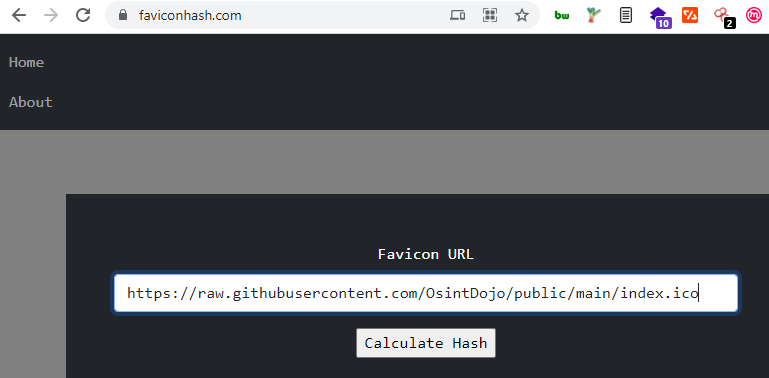
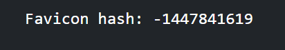
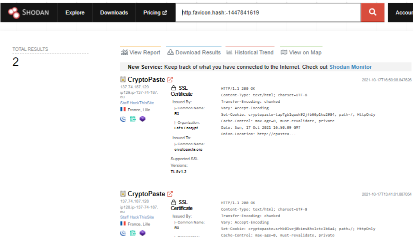
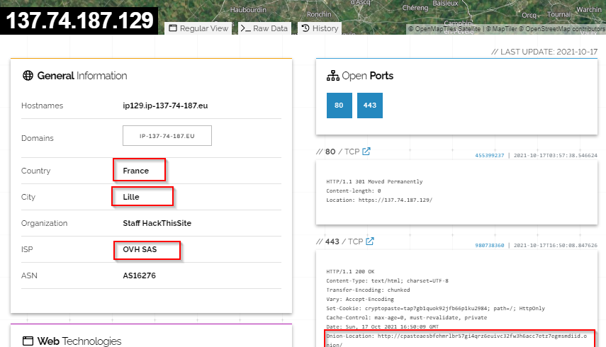
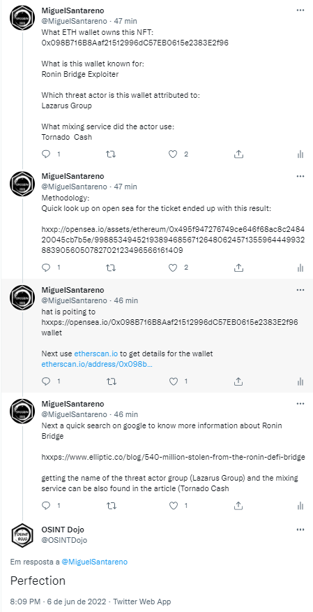

OSINT Dojo - OSINT challenge week 10/18/2021 - Darknet Favicon Search
The challenge is the following:

Image from github:
Methodology:
Copy and paste the image from github into https://faviconhash.com/ and retreive the file hash
File Hash
After that do a quick dork on shodan http.favicon.hash:-1447841619 to retrieve websites that contain the same favicon
After that open any result and you should be able to retrieve the answers
Answers:
Q - .onion URL of website it is associated with
http://cpasteaesbfehmrlbr57gi4qrz6euivc32fw3h6acc7etz7egmsmdiid.onion/
Q - Country the associated .onion website is hosted in
France
Q - Hosting provider of .onion website
OVH SAS
